Start here
Bespoke combines three things: your reusable career profile, the job posting in the current tab, and an AI provider you choose.
Describe your experience
Enter skills, roles, projects, education, and contact details once.
Review the posting
Confirm the extracted role, company, and job description.
Generate both documents
Get a match report, tailored CV, and cover letter.
Track and prepare
Save the application, schedule rounds, prepare, and debrief.
Before you begin
- ✓ A current Chrome, Edge, or Firefox installation.
- ✓ Access to one supported AI provider, or a running Ollama instance. Provider fees, if any, go directly to that provider.
- ✓ A few minutes to add accurate profile information. Better source material makes the generated documents more useful.
Install the extension
Install from the Chrome Web Store for everyday use and automatic updates, or load a build yourself if you want to inspect or change the source.
Chrome and Edge
- Open Bespoke on the Chrome Web Store.
- Choose Add to Chrome. In Edge, first allow extensions from other stores when the banner asks.
- Pin Bespoke to the browser toolbar.
Firefox
The Firefox listing is awaiting review on addons.mozilla.org. Until it is published, load a release build as a temporary add-on:
- Open the latest GitHub release, download the Firefox archive, and extract it to a permanent folder.
-
Open
about:debugging, choose This Firefox, then Load Temporary Add-on and select the extractedmanifest.jsonfile.
Firefox removes a temporary add-on when the browser restarts, so load it again for the next session. Keep the extracted folder in place while it is loaded.
From source
You need a current Node.js LTS release and pnpm.
git clone https://github.com/rtome85/bespoke.git
cd bespoke
pnpm install
pnpm dev
Load build/chrome-mv3-dev as an unpacked extension. The
development build updates while the command is running.
Connect an AI provider
Credentials are saved in the browser's extension storage. Bespoke does not have an account system or a server that receives them.
- Open a provider and enable it.
- Enter its API key and base URL when the provider requires one.
- Use Test connection before leaving the screen.
- Open Model routing and choose a provider and model for match scoring, document drafting, and interview prep.
- Optionally assign a fallback route so work can continue when the primary provider is unavailable.
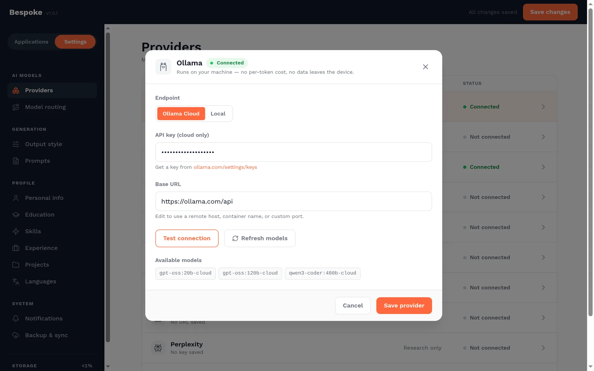
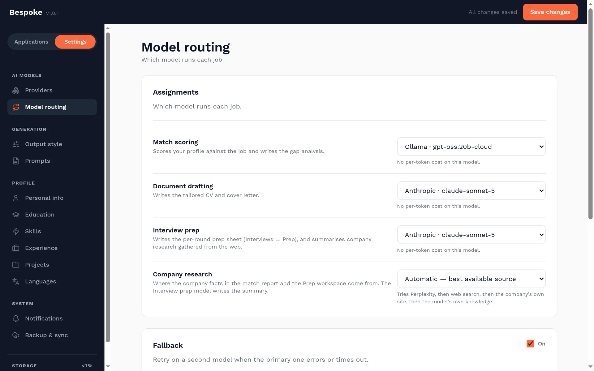
Research can use Perplexity, Tavily, Brave Search, Exa, the company's own site, or clearly labelled model knowledge. It is optional and configured from the provider and routing screens.
Build your profile
Your profile is the factual source for every match report and generated document. Bespoke tailors and prioritises it; it should not invent experience that is not there.
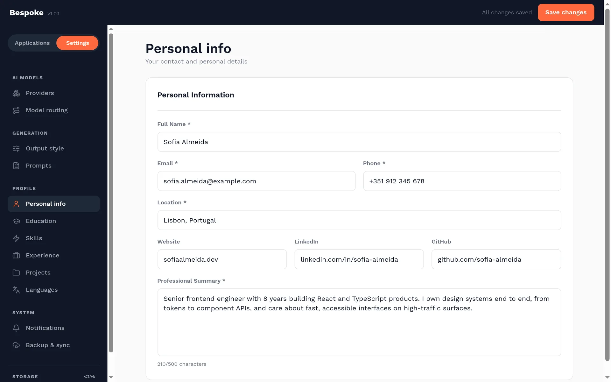
What to add
- Contact details and location, including professional links you want to appear in documents.
- Work experience with outcomes, scope, technologies, and measurable impact—not just responsibilities.
- Skills, projects, education, certificates, and languages relevant to the roles you pursue.
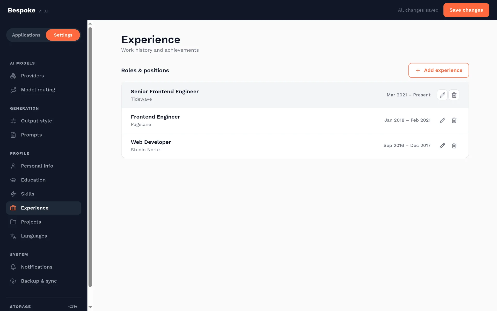
Once your profile is in place, decide how the documents should read. See Shape the documents.
Shape the documents
Three sets of controls decide how the CV and cover letter read: Output style for the voice, Prompts for the exact instructions sent to the model, and Generation parameters for how freely the model writes. All three save automatically.
Output style
Each setting adds one sentence of style instructions to the system prompt, after your own prompt. The middle stops, Balanced and Standard, add nothing, so the prompt alone decides.
| Setting | What it changes | Applies to |
|---|---|---|
| Match strictness | Rigorous weighs missing skills heavily, and imperfect matches can score below 50%. Lenient gives credit for transferable and adjacent experience. | Match score |
| Language | Match the job posting writes in the posting's language. Choosing a language forces it for every posting. Headings are translated, and names, job titles, and technologies stay as written. | CV and cover letter |
| Tone | Formal uses precise corporate language. Professional is approachable. Conversational is warmer while staying professional. | CV and cover letter |
| Resume focus | Skills-first puts technical skills near the top. Experience-first leads with roles and achievements. | CV only |
| Bullet density | Concise keeps each bullet to one line of action and result. Detailed adds the tools, scale, and context behind it. | CV only |
| Reading level | Simple uses plain words and short sentences. Advanced allows domain vocabulary and more complex sentences. | CV and cover letter |
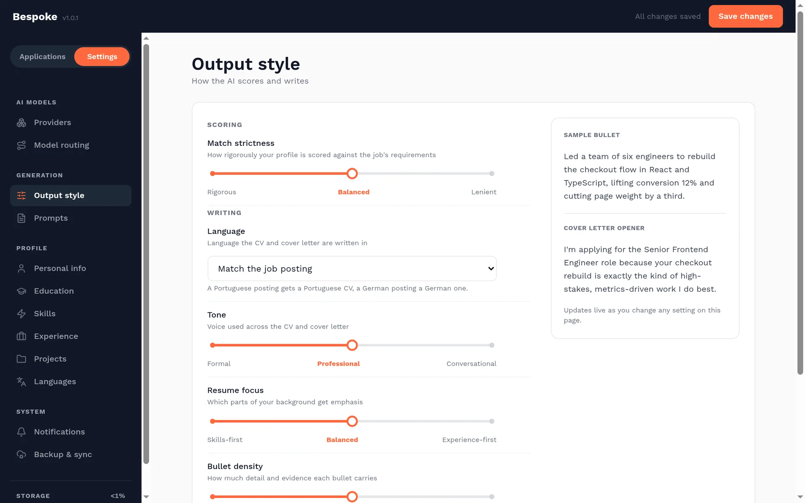
Output style only affects documents you generate afterwards. To apply a change to existing documents, generate them again.
Prompts
Prompts are the exact instructions the model receives. The CV and cover letter each have two prompts:
- The system prompt sets the rules: the model's role, the document structure, and what it must never do.
-
The user prompt template carries the specific
job.
{{companyName}},{{jobTitle}},{{jobDescription}}, and{{userProfile}}are replaced with the real values before sending. Remove a placeholder and the model never sees that information.
Start from a preset fills all four prompts at once. Standard suits any industry. Tech / Engineering emphasises quantified impact, technical depth, and project links. Creative / Portfolio puts portfolio work first, in a warmer narrative voice. Applying a preset overwrites your custom prompts.
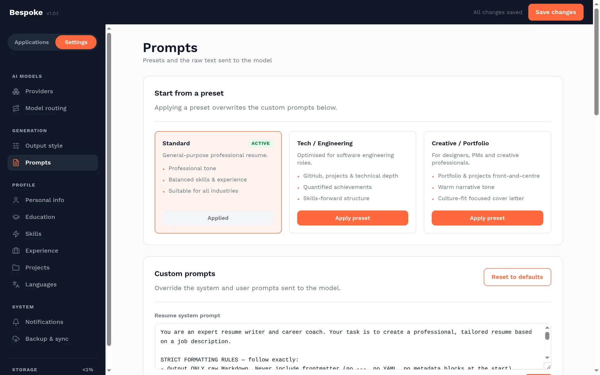
When you edit a CV prompt, keep these rules in mind:
- Keep the content rules that limit the model to skills and experience in your profile. They are the main protection against invented claims.
- Keep the formatting rules. The preview and PDF render the model's Markdown as-is, so headings, bullets, and section dividers come straight from the prompt.
- Don't contradict Output style. Its instructions are added after your prompt, so conflicting instructions make the result unpredictable.
The same screen holds three more prompts. The company research prompt is used only when research runs on Perplexity. The interview prep and technical interview prep prompts must return the JSON fields listed on screen. A section the prompt drops won't appear in the prep workspace.
When an update ships improved default prompts, Bespoke replaces the four CV and cover letter prompts with the new defaults, and your edits to them are lost. The research and interview prep prompts are kept. Save your versions somewhere else so you can paste them back after an update.
Generation parameters
These three sliders control how the model writes, not what it is told. They apply to whichever model each job is routed to, and Reset to defaults restores the values below.
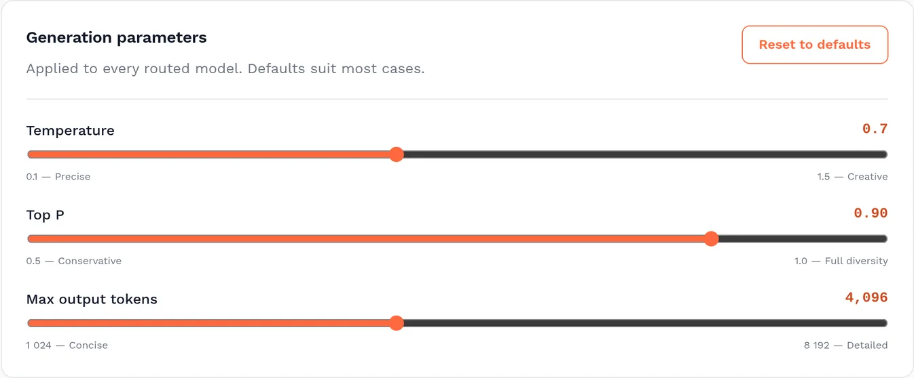
| Parameter | Lower | Higher |
|---|---|---|
| Temperature0.1–1.5, default 0.7 | Predictable, consistent wording that stays close to your profile, but it can read flat and repeat between applications. | More varied phrasing, but more likely to embellish, drift from the facts, or break the formatting rules. Above about 1.0, check the output carefully. |
| Top P0.50–1.00, default 0.90 | Only the most likely words are considered, so the vocabulary is safe and conventional. | Less common words are allowed, which adds variety but can produce unusual word choices. |
| Max output tokens1,024–8,192, default 4,096 | A hard length limit. Too low, and a long CV is cut off mid-section. | Room for long CVs and for reasoning models, whose hidden thinking counts against the limit. Each call can cost more and take longer. |
Temperature and top P both control variety, so change one at a time. For length and detail, use Bullet density and the prompts rather than max output tokens: the limit truncates output, it doesn't make the model write more.
Where each parameter applies
- CV and cover letter use all three values exactly as set.
- Match scoring, interview prep, and company research cap temperature at 0.4, and Learn more lessons cap it at 0.5. A lower setting passes through, but a higher one can't make scores or prep erratic. These jobs use top P as set, but have fixed length limits of their own.
- Job extraction ignores these settings entirely.
- Ollama sizes its context window from the prompt length plus max output tokens, between 8K and 32K tokens. A higher limit can make a local model use more memory and load more slowly.
Raise max output tokens, especially with a reasoning model. If it invents details or ignores the structure, lower the temperature before you edit the prompt.
Tailor an application
Start from the real posting so Bespoke can compare the role with the profile you saved.
- Open the job posting in the browser.
- Right-click the page and choose Check my match for this job. To limit what Bespoke reads, select the job description first. The side panel opens (in Firefox, a dialog window) and Bespoke extracts the company, title, and description.
- If it finds the company and title, the match analysis starts straight away. If it can't, the Check your match form opens. Fill in or correct the details, then choose Analyze match.
- Read the match report: the score, strengths, weaknesses, suggested improvements, and a short company profile.
- Choose Generate Docs. On Strengthen this application, add any gap you can honestly cover so the documents include it, then choose Generate CV + cover letter.
- Open the preview to switch between the resume and cover letter, edit the Markdown, and download it as Markdown or PDF.
- Save the application so its match report, documents, notes, tags, and interview history stay together. If you aren't ready to apply, choose Save for later from the report.
{kind=link}
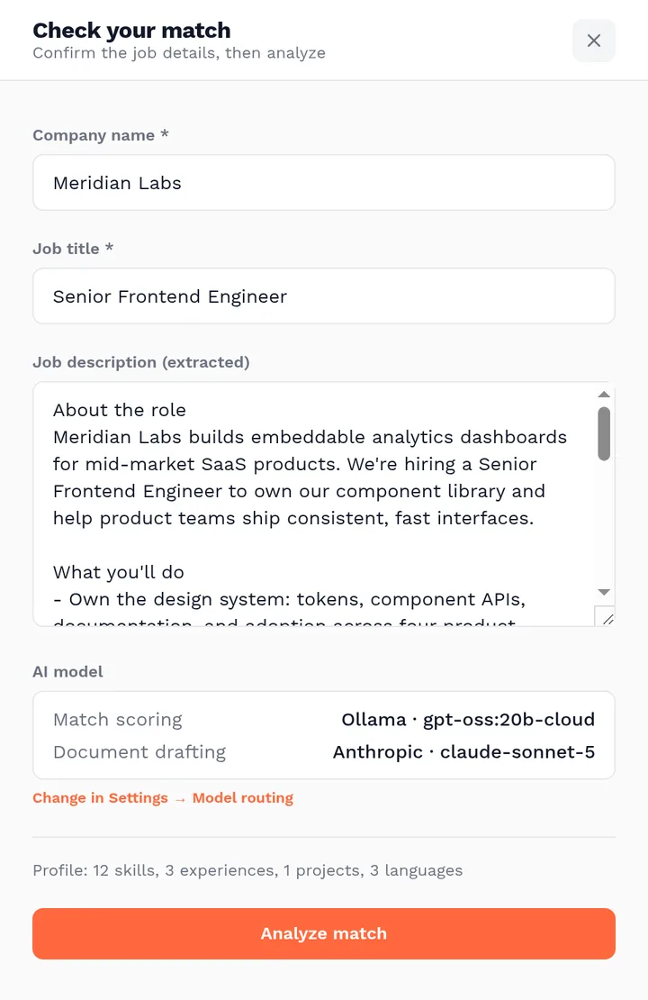
{kind=link}
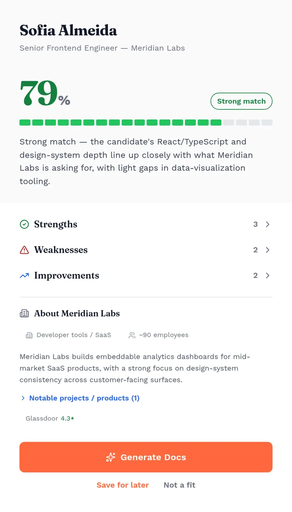
{kind=link}
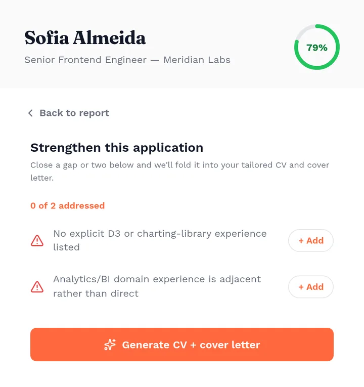
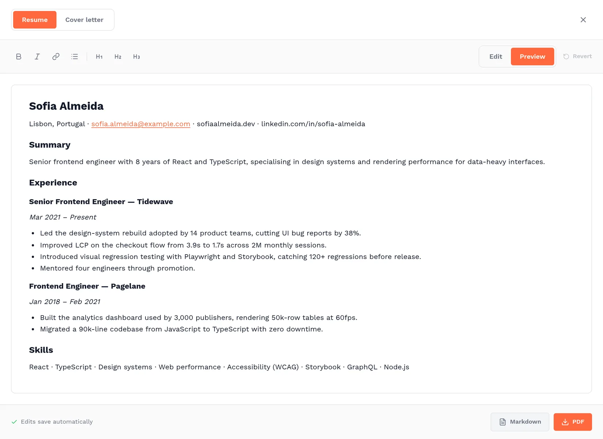
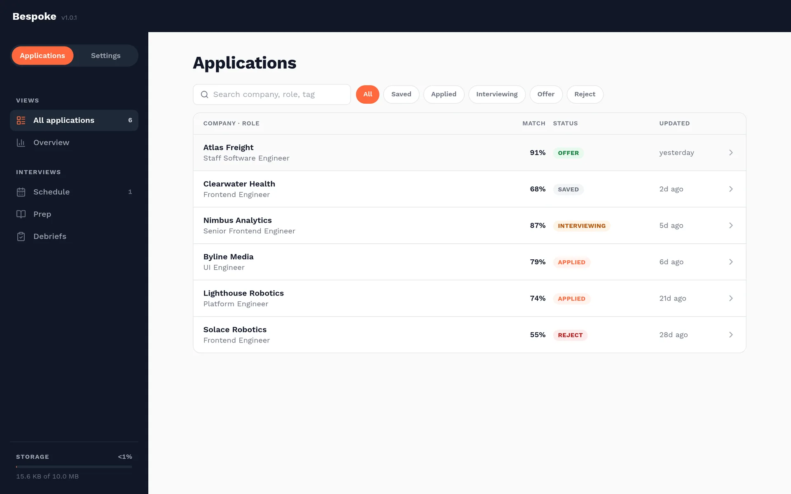
Generated text can be wrong or overconfident. Check dates, claims, names, links, and role-specific language against your source profile and the original posting.
Prepare for interviews
Applications move from Saved or Applied into Interviewing, where every round gets its own preparation and debrief workspace.
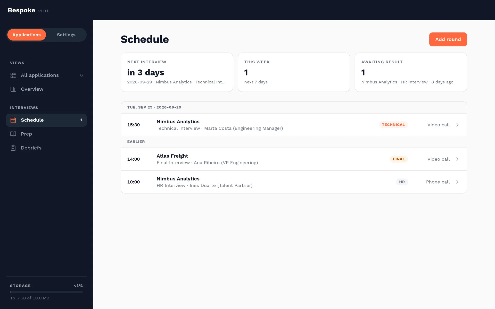
- Change an application's status to Interviewing or add its first interview round.
- Add the local date, time, round type, format, interviewer, and any notes you already have.
- Generate a prep sheet, then work through company research, talking points, likely questions, STAR stories, and technical exercises.
- After the conversation, record a debrief, follow-up actions, and the outcome while the details are fresh.
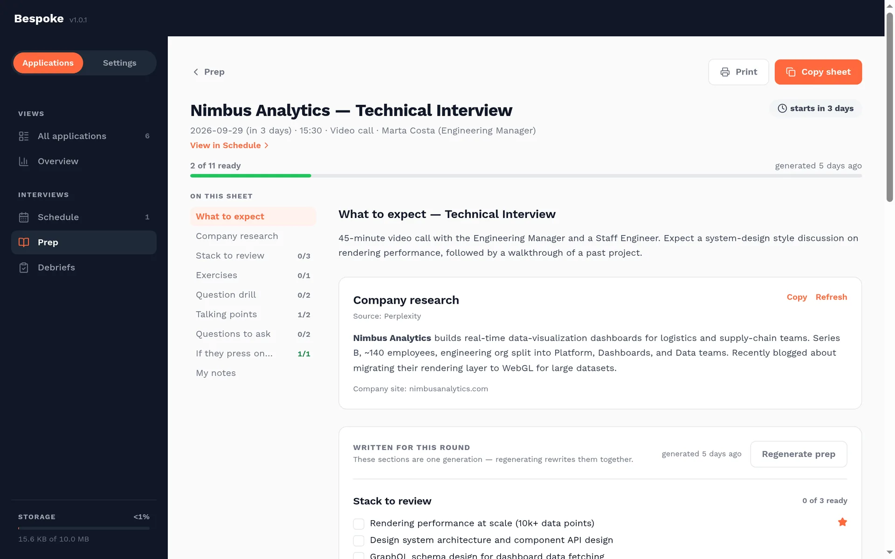
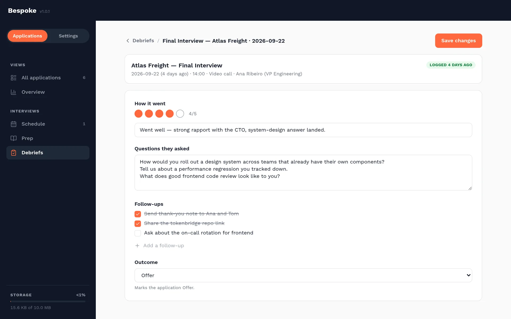
Only one open, non-synthesised round is allowed per application. Add the next round after completing the current round's debrief.
Data & privacy
Bespoke is local-first. Your profile, settings, credentials, and
application records live in chrome.storage.local.
- Generation requests go directly from the extension to the AI provider or endpoint you configured.
- Company research goes only to the research source you select.
- Google Drive backup is opt-in and uses the private app-data folder for your own Google account.
- Bespoke includes no advertising or product telemetry.
Before using a hosted provider, read its retention and training policy. For the formal details, see the Bespoke privacy policy.
Troubleshooting
Most issues come from a provider connection, browser permission, or a posting whose layout changed.
The provider connection test fails
Confirm the API key, provider base URL, and selected model. For a local Ollama instance, verify that Ollama is running and reachable from the browser, then approve the requested host permission.
The job description is incomplete
Expand collapsed sections on the posting, reopen Bespoke, and edit the extracted text before analysis. Job boards change markup frequently, so the review step is intentional.
The side panel does not open
Refresh the job tab after installing or updating the extension. Then use the page's context menu again. Firefox opens the same workflow in a dialog rather than Chrome's side panel.
Generation stops or times out
Retry with a smaller model or lower maximum-token setting, and verify the provider is responsive. Configure a fallback under Model routing if you regularly switch between local and hosted models.
I found a bug or need more help
Search GitHub Issues, then open a report with the browser, extension version, steps to reproduce, and the visible error. Remove API keys and personal application data from screenshots and logs.